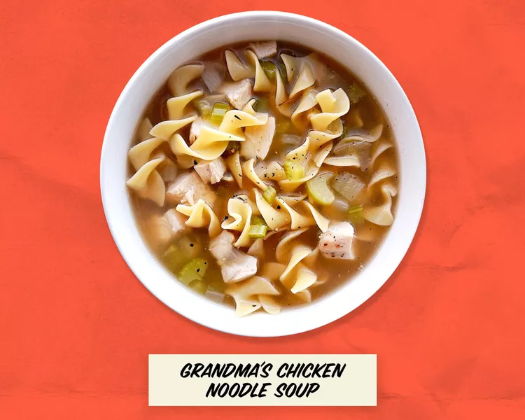

Noodle Soup

Time: 10 mins Cook Time: 30 mins Total Time: 40 mins
Servings: 4
Ingredients
- 1 tablespoon butter
- ½ cup chopped onion
- ½ cup chopped celery
- 4 (14.5 ounce) cans chicken broth
- 1 (14.5 ounce) can vegetable broth
- ½ pound chopped cooked chicken breast
- 1 ½ cups egg noodles
- 1 cup sliced carrotsr
- ½ teaspoon dried basil
- ½ teaspoon dried oregano
- salt and ground black pepper to taste
Directions
Step 1
Melt butter in a large pot over medium heat. Add onion and celery and cook until just tender, about 5 minutes.
Step 2
Add chicken broth, vegetable broth, chicken, egg noodles, carrots, basil, oregano, salt, and pepper. Stir to combine
and bring to a boil.
Step 3
Reduce heat and simmer for 20 minutes.
Back to Recipes